护肤相关筛查
使用固定的五种护肤成分参照，比较同一模型、同一终点；保留跨平台分歧。
我们探索液液相分离能否改善微生物生产光甘草定，并用可追溯证据检验护肤用途、资源消耗和环境影响。
核心实验比较是：低表达 OC/DMT、无相分离的基线组 G1，与相同背景的相分离组。我们希望检验生产效率是否改善，以及改善是否足以抵消额外的表达、培养和纯化负担。
使用固定的五种护肤成分参照，比较同一模型、同一终点；保留跨平台分歧。
按 1,397 篇文献分析研究对象、宿主、工程策略与相分离应用，新增八张内容图。
计算纯产物增益与资源增量之间的关系，帮助确定实验目标。
尚无本项目匹配组产率、纯度、资源清单和配方安全结果。
本页已加入同研究功效比较、文献生产时间序列、提取与回收分析；原有 1,397 篇文献内容分析和 16 种成分模型对照全部保留。新图区分外部实测、模型预测与条件计算，项目湿实验仍待取得。
这次直接使用已经筛选的完整数据库，围绕“研究什么、用什么底盘、采用什么策略、哪些方法能够迁移”展开分析。八张图把项目放回已有研究网络，再将证据连接到我们的实验问题。
统计单位为不同 DOI，20,567 条提取记录归并为 1,397 篇文献条目，避免把同篇论文的多行结果计成多篇。主类别图每篇只计一次；主题图允许一篇进入多个集合。以下比例描述本项目文献库。

读图结论：以源表主宿主标签统计，酵母为 770 篇（55.1%）。黄酮、异黄酮及异戊烯基黄酮主类别共 230 篇，其中 113 篇的主宿主是酵母。它们为本项目选择酵母和黄酮类通路提供可借鉴的底盘与方法文献，而不是直接给出光甘草定的最佳宿主排名。


表达与动态调控涉及 143 篇，发酵与过程优化 108 篇，前体与辅因子供给 86 篇，空间组织与区室化 48 篇。我们的推断是：项目可以在已有表达和过程优化基础上，进一步检验酶与底物的空间组织是否改善多步反应；文献频数用于选择可借鉴的方法，不代表方法的成功率。

这张图帮助安排组合实验：空间组织需要同时考虑表达水平、前体／辅因子供给和培养条件。因此，相分离组应配有表达匹配的无相分离对照，避免将表达量变化误认为空间组织效果。

本库黄酮相关 231 篇、酵母相关 825 篇、空间组织相关 48 篇；三者交集为 2 篇：一篇是酵母过氧化物酶体合成二氢槲皮素的研究，一篇是酵母酶共定位综述。这个交叉位置支持一个明确的问题：能否将已有空间组织思路迁移到光甘草定的多酶反应？“空间组织”涵盖有膜区室与无膜凝聚体，两者不能等同。
该交集说明当前语料中的方法连接较窄，适合提出进一步验证的研究方向。它不等同于全球只有两篇相关研究，也不用于宣称项目已被证明有效或具有全球首创性。

其中 3 篇归入生物合成应用，5 篇归入工程平台与方法，6 篇为细胞机制与疾病，2 篇为递送与仿生材料。这为项目提供不同层次的知识：形成和调控凝聚体的方法、酶招募机制，以及其他产物中的生产应用。
| 可迁移案例 | 文献结果 | 与项目的联系 | 文献 DOI |
|---|---|---|---|
| 无细胞甘氨酸合成 | 数据库记录：1 小时游离酶对照 3.4 mmol/L，凝聚体体系 5.0 mmol/L，约为对照的 1.47 倍。 | 提供同研究内的定量方法例证；该增益不能直接转移到酵母光甘草定。 | 10.1016/j.jcou.2025.103269 |
| 依克多因的凝聚体工程 | 数据库记录：工程菌在 5 L 反应器中 24 小时约 50 g/L；原研究结合祖先酶重建与空间组织。 | 说明凝聚体可进入生产体系研究；最终滴度不能全归因于相分离，也不与光甘草定直接排名。 | 10.1016/j.enzmictec.2026.110928 |
| 酵母过氧化物酶体合成二氢槲皮素 | 数据库记录：摇瓶从头合成滴度 120.3 ± 2.4 mg/L；属于有膜细胞器区室化。 | 比其他产物更接近黄酮与酵母组合，支持空间组织的迁移思路；不作为液液相分离的直接验证。 | 10.1186/s12934-025-02773-2 |

案例来源：甘氨酸研究、依克多因研究、二氢槲皮素研究。这是方法例示，不是全部研究的效果量综述。
同一酶试验中的活性比较，能够支持光甘草定作为护肤活性候选的研究价值。下面将酶、细胞、动物和人体复方研究分开解释，不把酶抑制倍数写成成品美白倍数。
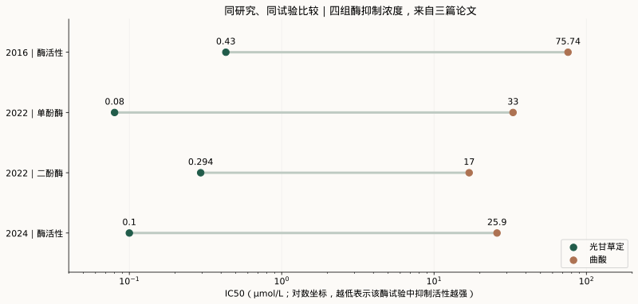
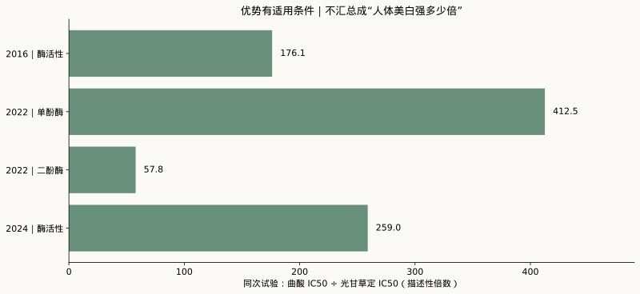
原始定位：2016 年 Fig. 2／结果段；2022 年摘要与酶动力学；2024 年 Table 4。2016 年与 2022 年对抑制类型的解释也不同，说明实验方法和底物条件必须保留。
| 研究层级 | 观察到什么 | 对项目意味着什么 | 原始来源 |
|---|---|---|---|
| 酶试验 | 三篇研究中，光甘草定 IC50 均低于各自曲酸对照。 | 支持高活性候选；蘑菇酶不等于人体皮肤。 | 上方三篇原始研究 |
| 细胞与豚鼠皮肤 | 1998 年研究报告细胞酪氨酸酶抑制；0.5% 外用条件下豚鼠 UVB 色沉／红斑减轻。 | 属于外部动物研究，0.5% 不是建议的人体安全添加量。 | Yokota 1998 |
| 细胞／斑马鱼的分歧 | 2023 年研究中，B16F1 细胞黑色素减少，但斑马鱼未显示同向效果。2016 年还报告斑马鱼胚胎毒性。 | 跨物种不能直接外推；效力、暴露与安全须分别验证。 | Dej-adisai 2023；Chen 2016 |
| 人体复方探索 | 40 名女性使用含光甘草定、穿心莲内酯和脱铁乳铁蛋白的复方凝胶 6 个月，研究报告改善；3 例轻度短暂干燥。 | 无对照、开放研究；改善无法单独归因于光甘草定。 | Cantelli 2020（2019 年在线） |
可以写入 Wiki 的结论：光甘草定具有值得开发的酶抑制活性和皮肤用途研究基础，支持继续开展生产与配方研究。局部安全、有效暴露和独立人体功效仍是必须验证的部分。
已有研究证明可以合成光甘草定，时间序列则进一步显示中间体积累和目标产物出现的时机。这为酶比例、空间组织和回收优化提供检验方向。
读取 Zhang 等（2026）公开 Source Data 的 Fig. 4d、4e，共 197 个有效浓度值，另有 1 个空缺保持缺失。点为原文重复，误差线为样本标准差；不是本项目湿实验。查看原论文。
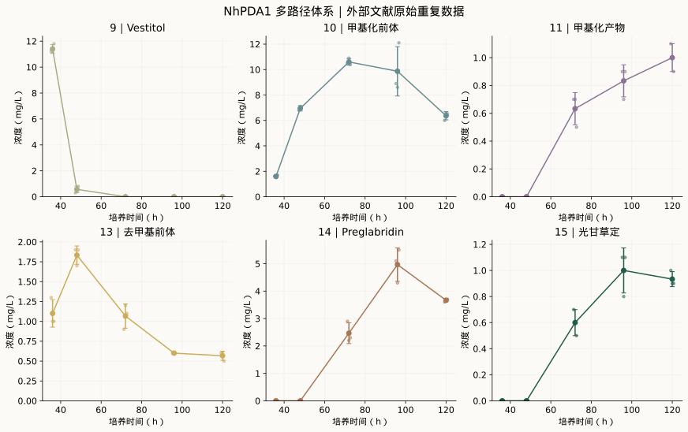
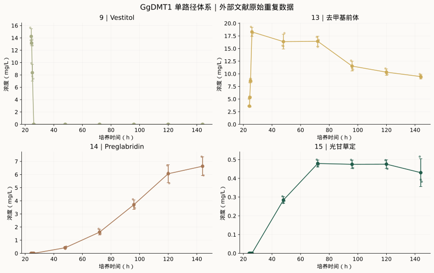
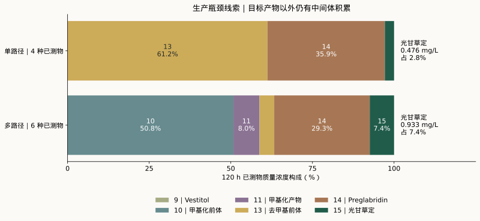
实际线索：120 h 的光甘草定均值分别为 0.933 和 0.476 mg/L；多路径体系的化合物 10、14 仍有积累，单路径体系则主要积累 13、14。这支持把末端转化、酶比例和中间体残留作为重点，而不是只测最终产物。两种体系的采样与路径不同，不能把浓度差直接归因于某一个因子。
相分离设计能够检验什么：以匹配的游离酶、支架、完整凝聚体系及破坏凝聚对照，测量中间体和产物的胞内／胞外分布；只有这些对照才能区分空间组织、表达量和总生物量的贡献。当前文献曲线不构成相分离已提高光甘草定生产的证据。
保留原有五种参照，新增十种常见成分。名单在新一轮预测前固定，并已在 Matvision 实际运行 ADMET-AI 的 17 项护肤相关任务与 MapLight 的细菌回复突变任务。
支持继续开发的线索：光甘草定的 ADMET-AI 致癌性筛查分数为 0.053，低于 15 种参照中的 11 种；两套细菌回复突变预测均落在本组参照分数范围内。需要优先验证的方面：皮肤反应／致敏分数 0.755，高于 14 种参照，并保留受体及细胞应答信号。这些是各终点的模型观察，不能合成为“整体安全排名”。
用途分组让比较更有解释力：提亮与抗氧化原料提供活性成分背景；保湿调理、酸类和其他活性展示日常配方的成分范围。甘油等并非与光甘草定等功效的替代品，也不是标准阴性对照。全部结果均为结构预测，未输入添加量、配方或经皮暴露。
当前显示 15 种参照，光甘草定固定保留。
每个数值为五成员均值 ± 标准差；仅在同一列比较。标准差表示模型成员差异，不是生物重复或人体风险置信区间。小屏幕可在表格内横向滑动。
| 成分与用途 | 皮肤反应／致敏ADMET-AI · Skin_Reaction | 细菌回复突变ADMET-AI · AMES | 致癌性筛查ADMET-AI · Carcinogens_Lagunin | 细菌回复突变MapLight · AMES |
|---|---|---|---|---|
| 光甘草定研究对象 | 0.755 ± 0.041 | 0.298 ± 0.037 | 0.053 ± 0.034 | 0.217 ± 0.044 |
| α-熊果苷提亮／抗氧化 | 0.349 ± 0.200 | 0.333 ± 0.109 | 0.036 ± 0.041 | 0.212 ± 0.017 |
| 烟酰胺提亮／抗氧化 | 0.289 ± 0.101 | 0.032 ± 0.012 | 0.193 ± 0.060 | 0.107 ± 0.007 |
| 抗坏血酸葡糖苷提亮／抗氧化 | 0.333 ± 0.206 | 0.265 ± 0.143 | 0.015 ± 0.023 | 0.199 ± 0.039 |
| 曲酸提亮／抗氧化 | 0.595 ± 0.119 | 0.381 ± 0.180 | 0.272 ± 0.022 | 0.174 ± 0.023 |
| β-熊果苷提亮／抗氧化 | 0.358 ± 0.184 | 0.345 ± 0.129 | 0.040 ± 0.043 | 0.212 ± 0.017 |
| 甘油保湿／调理 | 0.529 ± 0.127 | 0.117 ± 0.050 | 0.350 ± 0.150 | 0.218 ± 0.024 |
| 尿素保湿／调理 | 0.511 ± 0.117 | 0.063 ± 0.036 | 0.300 ± 0.098 | 0.219 ± 0.013 |
| 尿囊素保湿／调理 | 0.531 ± 0.084 | 0.361 ± 0.065 | 0.243 ± 0.114 | 0.475 ± 0.034 |
| D-泛醇保湿／调理 | 0.616 ± 0.124 | 0.174 ± 0.114 | 0.176 ± 0.092 | 0.145 ± 0.005 |
| 甜菜碱保湿／调理 | 0.711 ± 0.228 | 0.031 ± 0.025 | 0.271 ± 0.188 | 0.093 ± 0.014 |
| 咖啡因其他常见活性 | 0.301 ± 0.170 | 0.111 ± 0.058 | 0.204 ± 0.142 | 0.202 ± 0.027 |
| L-抗坏血酸（维C）提亮／抗氧化 | 0.400 ± 0.094 | 0.139 ± 0.094 | 0.148 ± 0.077 | 0.212 ± 0.029 |
| α-生育酚（维E）提亮／抗氧化 | 0.900 ± 0.046 | 0.029 ± 0.015 | 0.048 ± 0.054 | 0.046 ± 0.010 |
| L-乳酸酸类／角质调理 | 0.439 ± 0.126 | 0.082 ± 0.048 | 0.388 ± 0.146 | 0.096 ± 0.007 |
| 水杨酸酸类／角质调理 | 0.398 ± 0.038 | 0.040 ± 0.016 | 0.330 ± 0.059 | 0.084 ± 0.006 |
这四列是阳性类别模型分数，数值高低不等于真实人体发生率；没有通用安全分界线，0.5 也不是护肤品安全线。
| 成分与用途 | 亲脂性数据集预测值ADMET-AI · Lipophilicity_AstraZeneca | 水溶解度（以 mol/L 为单位取对数）ADMET-AI · Solubility_AqSolDB |
|---|---|---|
| 光甘草定研究对象 | 3.583 ± 0.286 | -4.315 ± 0.323 |
| α-熊果苷提亮／抗氧化 | -0.161 ± 0.486 | -0.884 ± 0.242 |
| 烟酰胺提亮／抗氧化 | -0.435 ± 0.078 | -0.071 ± 0.195 |
| 抗坏血酸葡糖苷提亮／抗氧化 | -2.010 ± 0.936 | -0.395 ± 0.536 |
| 曲酸提亮／抗氧化 | -0.431 ± 0.229 | -0.104 ± 0.304 |
| β-熊果苷提亮／抗氧化 | -0.130 ± 0.453 | -0.872 ± 0.232 |
| 甘油保湿／调理 | -1.203 ± 0.222 | 0.828 ± 0.122 |
| 尿素保湿／调理 | -1.363 ± 0.150 | 0.166 ± 0.130 |
| 尿囊素保湿／调理 | -0.857 ± 0.195 | -1.005 ± 0.068 |
| D-泛醇保湿／调理 | -0.877 ± 0.287 | 0.546 ± 0.170 |
| 甜菜碱保湿／调理 | -2.679 ± 0.467 | 0.262 ± 0.151 |
| 咖啡因其他常见活性 | -0.178 ± 0.176 | -0.906 ± 0.158 |
| L-抗坏血酸（维C）提亮／抗氧化 | -2.235 ± 0.607 | 0.250 ± 0.158 |
| α-生育酚（维E）提亮／抗氧化 | 4.569 ± 0.474 | -6.539 ± 0.228 |
| L-乳酸酸类／角质调理 | -2.306 ± 0.389 | 0.504 ± 0.181 |
| 水杨酸酸类／角质调理 | -0.712 ± 0.152 | -1.584 ± 0.122 |
这两项为回归预测：亲脂性保留原数据集定义；水溶解度为 log10(mol/L)，数值更负表示预测溶解度更低。两者均不按毒性分数解读。
| 成分与用途 | 雄激素受体ADMET-AI · NR-AR | 雄激素受体配体结合域ADMET-AI · NR-AR-LBD | 芳烃受体ADMET-AI · NR-AhR | 芳香化酶ADMET-AI · NR-Aromatase | 雌激素受体ADMET-AI · NR-ER | 雌激素受体配体结合域ADMET-AI · NR-ER-LBD | 过氧化物酶体增殖物激活受体γADMET-AI · NR-PPAR-gamma |
|---|---|---|---|---|---|---|---|
| 光甘草定研究对象 | 0.027 ± 0.013 | 0.018 ± 0.013 | 0.543 ± 0.158 | 0.519 ± 0.127 | 0.653 ± 0.091 | 0.512 ± 0.075 | 0.076 ± 0.036 |
| α-熊果苷提亮／抗氧化 | 0.064 ± 0.013 | 0.029 ± 0.013 | 0.026 ± 0.013 | 0.017 ± 0.010 | 0.170 ± 0.052 | 0.074 ± 0.020 | 0.006 ± 0.003 |
| 烟酰胺提亮／抗氧化 | 0.011 ± 0.001 | 0.002 ± 0.001 | 0.009 ± 0.009 | 0.001 ± 0.001 | 0.030 ± 0.003 | 0.001 ± 0.000 | 0.000 ± 0.000 |
| 抗坏血酸葡糖苷提亮／抗氧化 | 0.052 ± 0.015 | 0.035 ± 0.028 | 0.001 ± 0.001 | 0.003 ± 0.003 | 0.125 ± 0.043 | 0.037 ± 0.019 | 0.002 ± 0.003 |
| 曲酸提亮／抗氧化 | 0.014 ± 0.004 | 0.011 ± 0.004 | 0.045 ± 0.033 | 0.004 ± 0.002 | 0.063 ± 0.015 | 0.014 ± 0.003 | 0.009 ± 0.004 |
| β-熊果苷提亮／抗氧化 | 0.060 ± 0.012 | 0.026 ± 0.012 | 0.030 ± 0.015 | 0.017 ± 0.010 | 0.159 ± 0.049 | 0.065 ± 0.016 | 0.005 ± 0.002 |
| 甘油保湿／调理 | 0.012 ± 0.004 | 0.007 ± 0.003 | 0.004 ± 0.003 | 0.001 ± 0.001 | 0.026 ± 0.006 | 0.003 ± 0.001 | 0.001 ± 0.000 |
| 尿素保湿／调理 | 0.012 ± 0.008 | 0.004 ± 0.003 | 0.002 ± 0.001 | 0.000 ± 0.000 | 0.025 ± 0.004 | 0.002 ± 0.001 | 0.000 ± 0.000 |
| 尿囊素保湿／调理 | 0.015 ± 0.007 | 0.008 ± 0.007 | 0.002 ± 0.001 | 0.000 ± 0.000 | 0.057 ± 0.015 | 0.002 ± 0.001 | 0.000 ± 0.000 |
| D-泛醇保湿／调理 | 0.018 ± 0.007 | 0.009 ± 0.003 | 0.001 ± 0.001 | 0.001 ± 0.001 | 0.042 ± 0.016 | 0.005 ± 0.002 | 0.001 ± 0.001 |
| 甜菜碱保湿／调理 | 0.009 ± 0.005 | 0.002 ± 0.001 | 0.001 ± 0.001 | 0.000 ± 0.000 | 0.041 ± 0.015 | 0.002 ± 0.001 | 0.000 ± 0.000 |
| 咖啡因其他常见活性 | 0.012 ± 0.003 | 0.002 ± 0.001 | 0.028 ± 0.019 | 0.001 ± 0.000 | 0.028 ± 0.005 | 0.000 ± 0.000 | 0.000 ± 0.000 |
| L-抗坏血酸（维C）提亮／抗氧化 | 0.023 ± 0.003 | 0.013 ± 0.013 | 0.015 ± 0.006 | 0.002 ± 0.003 | 0.051 ± 0.026 | 0.013 ± 0.015 | 0.003 ± 0.002 |
| α-生育酚（维E）提亮／抗氧化 | 0.002 ± 0.000 | 0.000 ± 0.000 | 0.004 ± 0.003 | 0.019 ± 0.012 | 0.062 ± 0.026 | 0.023 ± 0.017 | 0.004 ± 0.004 |
| L-乳酸酸类／角质调理 | 0.014 ± 0.006 | 0.007 ± 0.004 | 0.007 ± 0.004 | 0.001 ± 0.001 | 0.043 ± 0.007 | 0.006 ± 0.003 | 0.003 ± 0.002 |
| 水杨酸酸类／角质调理 | 0.021 ± 0.012 | 0.004 ± 0.003 | 0.040 ± 0.020 | 0.002 ± 0.001 | 0.067 ± 0.025 | 0.020 ± 0.010 | 0.009 ± 0.004 |
| 成分与用途 | 抗氧化应答元件ADMET-AI · SR-ARE | 基因组稳定性应答ADMET-AI · SR-ATAD5 | 热休克应答ADMET-AI · SR-HSE | 线粒体膜电位ADMET-AI · SR-MMP | 肿瘤抑制蛋白 p53 应答ADMET-AI · SR-p53 |
|---|---|---|---|---|---|
| 光甘草定研究对象 | 0.809 ± 0.060 | 0.131 ± 0.038 | 0.505 ± 0.139 | 0.957 ± 0.023 | 0.481 ± 0.093 |
| α-熊果苷提亮／抗氧化 | 0.079 ± 0.050 | 0.027 ± 0.018 | 0.008 ± 0.009 | 0.026 ± 0.018 | 0.034 ± 0.015 |
| 烟酰胺提亮／抗氧化 | 0.006 ± 0.004 | 0.001 ± 0.001 | 0.003 ± 0.001 | 0.001 ± 0.000 | 0.001 ± 0.000 |
| 抗坏血酸葡糖苷提亮／抗氧化 | 0.046 ± 0.027 | 0.009 ± 0.007 | 0.002 ± 0.001 | 0.002 ± 0.001 | 0.024 ± 0.014 |
| 曲酸提亮／抗氧化 | 0.115 ± 0.044 | 0.013 ± 0.003 | 0.028 ± 0.014 | 0.017 ± 0.013 | 0.035 ± 0.013 |
| β-熊果苷提亮／抗氧化 | 0.077 ± 0.048 | 0.025 ± 0.018 | 0.008 ± 0.008 | 0.026 ± 0.021 | 0.032 ± 0.016 |
| 甘油保湿／调理 | 0.032 ± 0.014 | 0.001 ± 0.001 | 0.004 ± 0.001 | 0.001 ± 0.000 | 0.003 ± 0.001 |
| 尿素保湿／调理 | 0.009 ± 0.003 | 0.000 ± 0.000 | 0.001 ± 0.001 | 0.000 ± 0.000 | 0.001 ± 0.000 |
| 尿囊素保湿／调理 | 0.015 ± 0.009 | 0.002 ± 0.001 | 0.001 ± 0.001 | 0.000 ± 0.000 | 0.009 ± 0.010 |
| D-泛醇保湿／调理 | 0.025 ± 0.011 | 0.001 ± 0.001 | 0.004 ± 0.001 | 0.001 ± 0.000 | 0.004 ± 0.002 |
| 甜菜碱保湿／调理 | 0.013 ± 0.009 | 0.000 ± 0.000 | 0.000 ± 0.000 | 0.000 ± 0.000 | 0.000 ± 0.000 |
| 咖啡因其他常见活性 | 0.010 ± 0.003 | 0.005 ± 0.002 | 0.001 ± 0.001 | 0.000 ± 0.000 | 0.003 ± 0.001 |
| L-抗坏血酸（维C）提亮／抗氧化 | 0.048 ± 0.040 | 0.003 ± 0.001 | 0.006 ± 0.005 | 0.002 ± 0.002 | 0.013 ± 0.012 |
| α-生育酚（维E）提亮／抗氧化 | 0.128 ± 0.036 | 0.000 ± 0.000 | 0.077 ± 0.050 | 0.194 ± 0.101 | 0.008 ± 0.007 |
| L-乳酸酸类／角质调理 | 0.045 ± 0.022 | 0.002 ± 0.003 | 0.006 ± 0.005 | 0.002 ± 0.001 | 0.005 ± 0.004 |
| 水杨酸酸类／角质调理 | 0.060 ± 0.020 | 0.005 ± 0.004 | 0.009 ± 0.002 | 0.016 ± 0.003 | 0.009 ± 0.002 |
表 3、4 表示特定试验中的活性信号；不能直接认定人体内分泌干扰、致癌或美白功效。完整保留所有预选任务，不按结果删列。
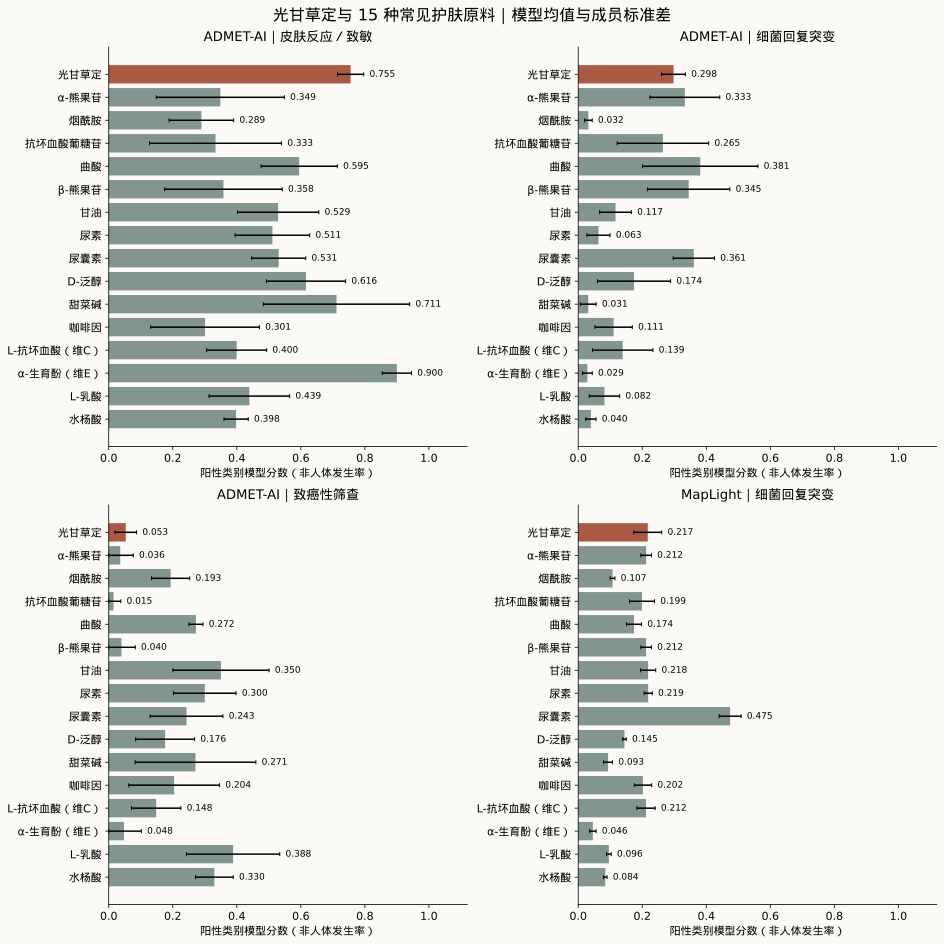
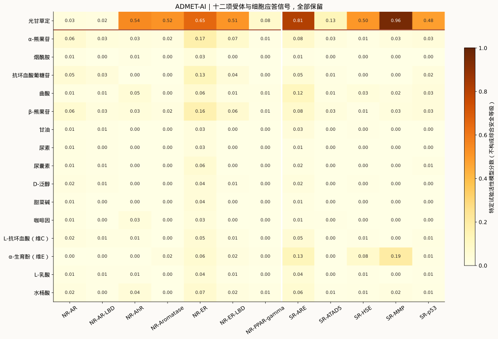
| 成分／CAS | 用途组 | 评估条件与来源 |
|---|---|---|
| α-熊果苷 84380-01-8 | 提亮／抗氧化 | SCCS 支持面霜不超过 2%、身体乳不超过 0.5% 的指定用途；需控制氢醌痕量。 SCCS/1642/22: Safety of alpha-arbutin and beta-arbutin in cosmetic products；Commission Regulation (EU) 2024/996, Annex III entries 375, 377 and 378 |
| 烟酰胺 98-92-0 | 提亮／抗氧化 | CIR 2005 支持所评估的化妆品用法；报告包含最高 5% 的人体刺激性试验。2% 和 5% 的色素研究提供用途参照，均不是通用安全上限。 Final Report of the Safety Assessment of Niacinamide and Niacin；The effect of niacinamide on reducing cutaneous pigmentation and suppression of melanosome transfer |
| 抗坏血酸葡糖苷 129499-78-1 | 提亮／抗氧化 | CIR 支持报告所述用法和浓度；非喷雾面颈产品报告用量最高 5%。该评估未覆盖以皮肤脱色为目的的使用。 Safety Assessment of Ascorbyl Glucoside and Sodium Ascorbyl Glucoside as Used in Cosmetics |
| 曲酸 501-30-4 | 提亮／抗氧化 | SCCS 最终意见支持不超过 1% 的指定美白用途；EU 2024/996 限面部和手部产品。皮肤屏障受损或去角质场景需额外关注。 SCCS/1637/21: Kojic acid, final opinion with June 2022 corrigendum；Commission Regulation (EU) 2024/996, Annex III entries 375, 377 and 378 |
| β-熊果苷 497-76-7 | 提亮／抗氧化 | SCCS 支持面霜不超过 7% 的指定用途，并要求控制氢醌痕量；不能把 α/β 两者当作独立安全证据票数。 SCCS/1642/22: Safety of alpha-arbutin and beta-arbutin in cosmetic products；Commission Regulation (EU) 2024/996, Annex III entries 375, 377 and 378 |
| 甘油 56-81-5 | 保湿／调理 | CIR 2019 支持报告所述用法和浓度；作为保湿及配方参照，不能当作美白功效对照。 甘油化妆品安全评估 |
| 尿素 57-13-6 | 保湿／调理 | CIR 2005 支持所述化妆品用法；报告用量 0.01%–10%，不是通用限量。需考虑刺激及促进其他成分经皮吸收。 尿素化妆品安全评估 |
| 尿囊素 97-59-6 | 保湿／调理 | CIR 2010 支持所评估用途和浓度；尿囊素报告用量最高 2%，不是所有配方的安全上限。 尿囊素及相关复合物安全评估 |
| D-泛醇 81-13-0 | 保湿／调理 | 2022 发表的 CIR 评估支持报告所述用法和浓度；本次使用明确的 D-泛醇结构，不与泛酸或消旋泛醇混同。 泛醇、泛酸及衍生物安全评估 |
| 甜菜碱 107-43-7 | 保湿／调理 | CIR 支持所述用途和浓度，条件是配方不产生刺激。本次为甜菜碱，不是椰油酰胺丙基甜菜碱。 烷基甜菜碱安全评估（含甜菜碱） |
| 咖啡因 58-08-2 | 其他常见活性 | 2024 发表的 CIR 评估支持报告所述化妆品用法和浓度；作为皮肤调理参照，不假定与光甘草定等功效。 甲基黄嘌呤化妆品安全评估 |
| L-抗坏血酸（维C） 50-81-7 | 提亮／抗氧化 | CIR 2005 支持所述用法；需保证配方中发挥抗氧化作用，某些金属和酶体系可能促氧化。不把纯分子预测等同成品效果。 L-抗坏血酸及相关盐类安全评估 |
| α-生育酚（维E） 59-02-9 | 提亮／抗氧化 | CIR 2018 支持生育酚类所评估用法。本次明确采用 RRR-α-生育酚，不能代表混合生育酚或生育酚乙酸酯。 生育酚与生育三烯酚安全评估 |
| L-乳酸 79-33-4 | 酸类／角质调理 | FDA 引述 CIR 的乙醇酸／乳酸条件：果酸≤10%、成品 pH≥3.5，并控制／提示日晒敏感性。本次只建模 L-乳酸分子，不包含配方 pH。 FDA 果酸使用与光敏感性说明 |
| 水杨酸 69-72-7 | 酸类／角质调理 | 保留为有产品类别及聚合暴露条件的酸类参照；2023 SCCS 最终意见并非无条件安全证明。2026 年另有聚合暴露评估请求，不能把请求当作新结论。 SCCS/1646/22 水杨酸最终意见；水杨酸及水杨酸酯聚合暴露新评估请求（非最终意见） |
评估或历史使用浓度不是光甘草定的安全浓度，也不替代目标市场的成品评估。水杨酸 2023 意见还指出眼刺激及儿童暴露问题，不能将其视为无条件安全参照。α／β 熊果苷结构分别保留；MapLight 特征相同不代表生物学等效。
本轮复用原有模型检查点，未重新训练或调整阈值。原光甘草定输出复现一致（最大差异小于 0.000001）。MapLight 数据重叠按去除立体信息后的连接结构核查：训练／验证集：烟酰胺、甘油、尿素、D-泛醇、咖啡因、L-抗坏血酸（维C）、α-生育酚（维E）、L-乳酸、水杨酸；测试集：曲酸。ADMET-AI 训练重叠未完整核实；本组不是独立验证集。
新增参照尚未运行 ADMETlab、admetSAR、VEGA、ECOSAR 或 ProTox，眼刺激和光毒性参照比较仍缺失。下载表中没有将缺失结果填成阴性。

| 模型／工具 | 实际输出 | 如何解释 |
|---|---|---|
| Chemprop 原子解释 | 已解释细菌回复突变、皮肤反应和致癌性三项任务；六分子 × 三任务 × 五成员，共 90 项数值完整性检查。 | 显示原子特征对指定模型输出的相对贡献；不是另一份独立毒性证据，也不是因果致毒基团。 |
| MapLight（无图神经网络版本） | 光甘草定细菌回复突变分数 0.217，五成员标准差 0.044。使用分子指纹／描述符和 CatBoost。 | 补充另一种建模框架。图神经网络扩展已完成，本轮结果见模型验证部分。 |
| ADMETlab | 光甘草定皮肤致敏 0.851、细菌回复突变 0.715、眼刺激 0.983。 | 致突变判断与 ADMET-AI／MapLight 存在分歧；眼刺激应纳入验证。 |
| admetSAR | 光甘草定皮肤致敏 0.743、眼刺激 0.797、细菌回复突变 0.234；另有光毒、光致刺激和光过敏任务。 | 补充局部接触及光相关终点；三个光相关任务不能混为同一结论。 |
| ProTox | 致癌和致突变均报告非活性、类别置信度各 0.67；生态毒性报告活性、置信度 0.59。 | 置信度对应所报告类别，不能当作阳性概率；生态信号仍需暴露信息。 |
| VEGA、EPI Suite、ECOSAR | 提供降解、富集和水生毒性预测；多项存在适用域或结构范围限制。 | 用于设计排放控制与验证优先级，详见环境部分。 |
ADMET-AI 与 Chemprop 解释属于同一预测链，不能计作两个独立模型的一致证据。ADMETlab、admetSAR、ProTox、VEGA 和 EPA 工具在本次页面更新中使用已核实的既有导出结果。

本次在 Matvision 提取冻结的 GIN 图神经网络表示，再与原 MapLight 的 2,563 个指纹／描述符拼接，训练五个 CatBoost 成员。它遵循官方扩展的特征思路，属于冻结图表示加分类器。
训练／验证池 5,821 行，固定测试集 1,457 行；测试集未用于拟合、调参、早停或阈值选择。为公平比较，基础特征和原模型检查点保持一致，基础模型测试输出复现误差小于 10⁻¹⁰。发现 0 行测试分子与训练集连接结构重叠，因此同时报告原测试集与剔除重叠后的结果。
| 模型 | 测试范围 | 样本数 | ROC-AUC ↑ | 平均精确率 AP ↑ | Brier 分数 ↓ |
|---|---|---|---|---|---|
| MapLight | 原固定测试集 | 1457 | 0.8680 | 0.9049 | 0.1435 |
| MapLight+GIN | 原固定测试集 | 1457 | 0.8709 | 0.9070 | 0.1422 |
| MapLight | 去除训练重叠 | 1457 | 0.8680 | 0.9049 | 0.1435 |
| MapLight+GIN | 去除训练重叠 | 1457 | 0.8709 | 0.9070 | 0.1422 |
Brier 同时受区分与校准影响，不能单独证明概率校准良好。下图均使用剔除训练连接结构重叠后的子集；完整结果一并下载。
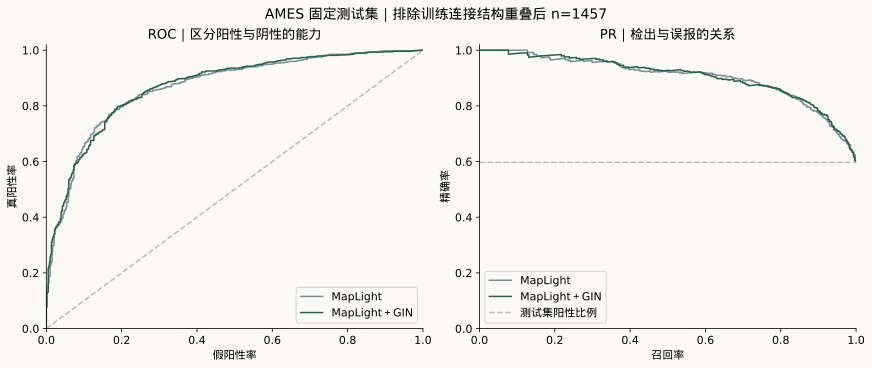
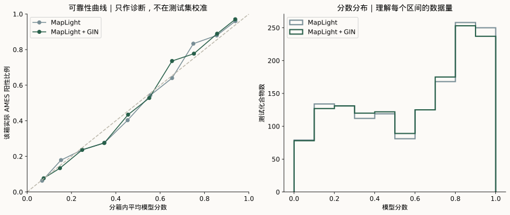
| 指标 | 配对重采样的平均差（GIN－基础） | 95% 百分位区间 |
|---|---|---|
| ROC-AUC | +0.0029 | [-0.0049, +0.0113] |
| AP | +0.0020 | [-0.0052, +0.0096] |
| Brier | -0.0013 | [-0.0055, +0.0028] |
对去重叠测试子集按化学连接结构分组，进行 1,000 次配对重采样。区间包含零时，不能宣称稳定优于基础模型；这反映测试样本抽样变化，不覆盖全部训练或外推不确定性。
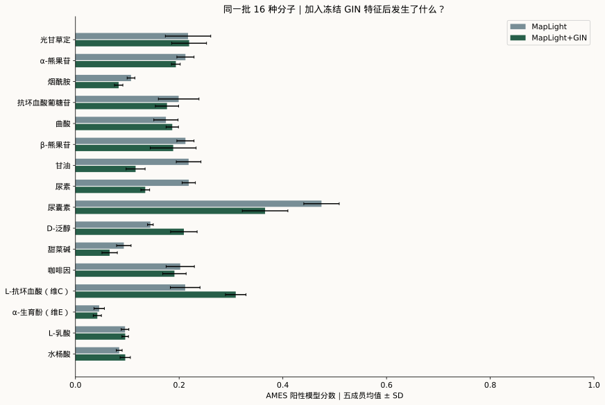
光甘草定的 AMES 分数由基础 MapLight 的 0.217 变为加入 GIN 后的 0.219。变化反映模型表示差异，不等于毒性发生改变，也不能通过挑选较低值确定安全添加浓度。
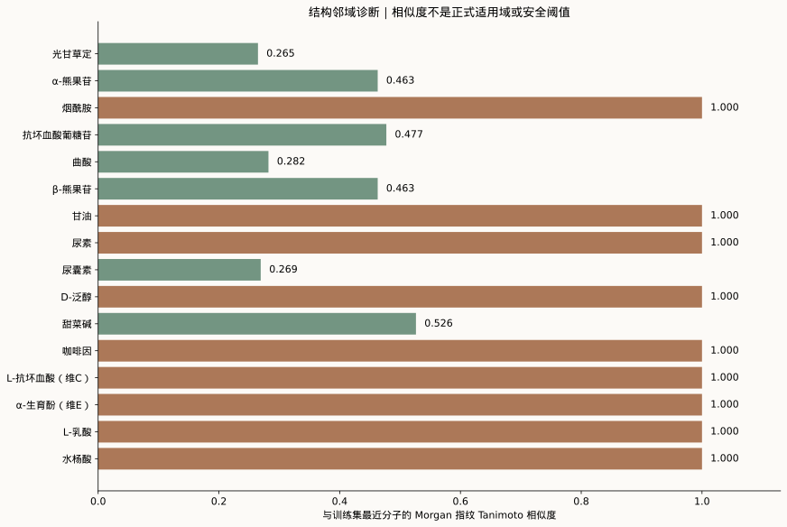
GIN 的预训练分子与基准数据的重叠尚不明确；参照组的训练重叠仍然存在。该运行增加一种表示方法与可复查的验证，未新增任何人体安全实测。
光甘草定的开发价值可以从“可生产、可回收、单位产物少消耗资源”三个方向验证。下面区分既有模型预测和条件计算；目前没有用假设图代替项目实测结果。
以下三图使用已完成的 VEGA、EPI Suite 与 ECOSAR 导出数据，覆盖光甘草定和五个路径相关化合物；这些化合物不是已检出的排放物，也不是上面的 15 种护肤参照。
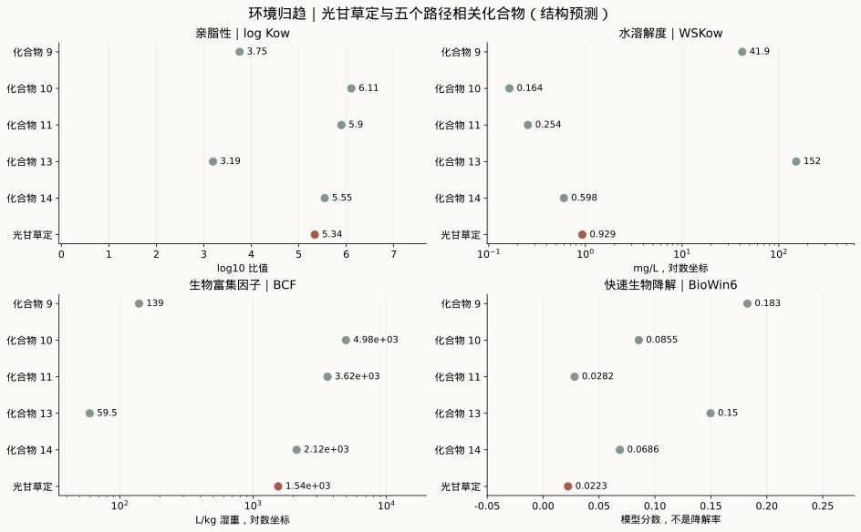
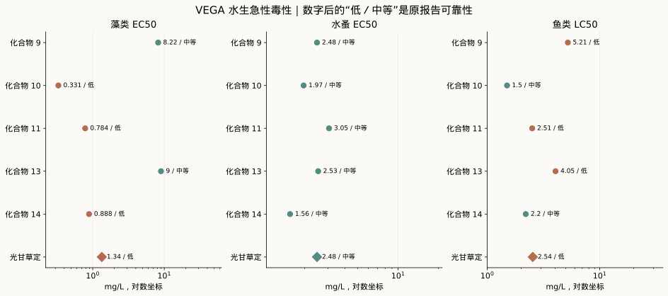
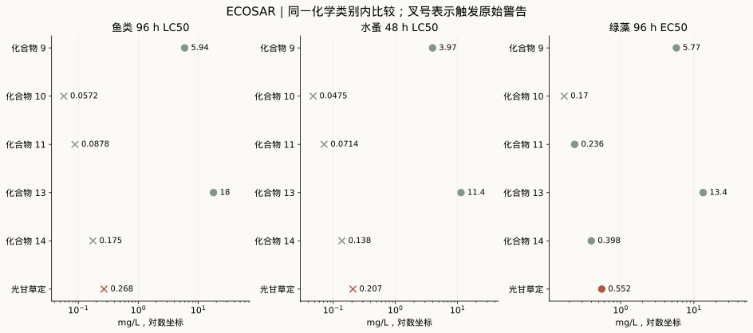
路径比较带来的开发线索：在同一套 EPI Suite 预测中，光甘草定的亲脂性和生物富集因子低于后段化合物 10、11、14，水溶解度则较高；早段化合物 9、13 的预测富集因子更低。因此，推进末端转化并同步测量中间体残留是可检验的工艺方向，不能仅凭目标产物增加就认定排放更安全。
| 问题 | 已有结果 | 结论边界 |
|---|---|---|
| 降解 | VEGA：不易快速生物降解，适用域为中等。 | 保留难降解关注；不能把模型类别换算成实际环境半衰期。 |
| 生物富集 | EPI Suite 生物富集因子约 1,542 L/kg 湿重；VEGA 多项富集结果适用域较低。 | 是筛查预测，不与不同方法的生物积累因子取平均。 |
| 水生毒性 | VEGA 预测藻类半数效应浓度 1.34 mg/L，水蚤 2.48 mg/L，鱼类半数致死浓度 2.54 mg/L。 | 藻类与鱼类结果适用域较低，水蚤为中等；不同物种和试验终点不能直接排名。 |
| 类别与范围警告 | ECOSAR 中性有机物类别鱼类 96 小时半数致死浓度约 0.268 mg/L，但超过该模型的亲脂性适用范围。 | 保留原始警告，不据此设排放限值；多类别输出不平均。 |
| 实际环境风险 | 尚无项目排放浓度、处理去除率及受纳水体暴露数据。 | 不能计算可靠风险商，也不能宣称实际水环境安全。 |
方法来源：美国环保署环境归趋筛查工具、美国环保署水生毒性模型。
统一功能单位为 1 g 经纯度校正的分离光甘草定。先匹配培养、分离纯化和废物处理边界；上游原料与设备制造尚未纳入，所以当前不是完整生命周期评价。
纯产物质量 = 分离样品质量 × 光甘草定质量分数。若已经使用分离后的质量，不再重复乘回收率。水、溶剂、总投入质量、电耗和成本分别计算，只有相同单位的数值才可相比。

举例：如果纯产物质量提高 20%，某项批次资源只增加 10%，则该项单位产物资源减少 8.3%。如果产物提高 20%、资源增加 50%，强度反而提高 25%。这两者都是假设情景，不能写成实验节约量。
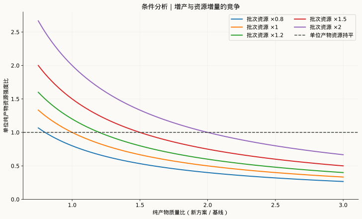
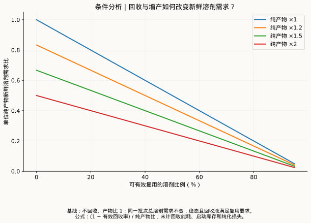
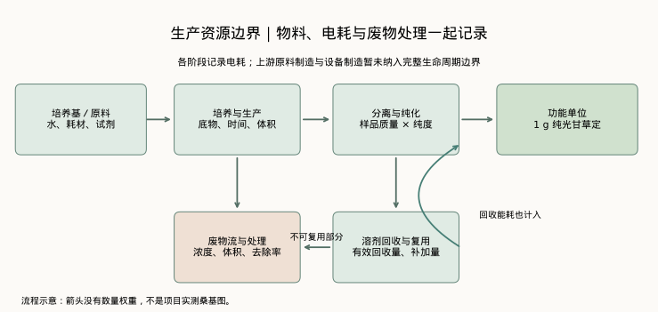
有了这些实测结果后的效果：匹配组纯产物质量与材料清单可以生成单位产物水耗、溶剂耗和材料投入强度图；电表数据与回收记录可以检验是否存在能耗转移；废物流浓度与处理前后数据可以评估排放控制。只有同一功能单位、同一边界的比较，才能支持具体的“节约多少”。
Cho 等（2004）的同研究七种提取条件中，粗提物光甘草定纯度为 0.53%–4.27%。这项历史研究用于说明纯度与分离负担的关系，不能代表当前最优工业工艺。
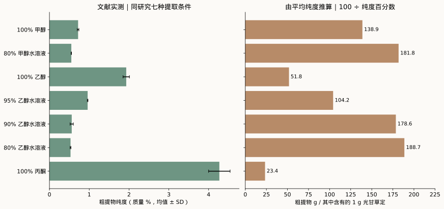
来源：Cho 等，Table 1，PDF 第 3 页。此图未依据纯度推荐溶剂，也未据此计算碳足迹；原表另一项“原料中浓度”的脚注单位存在不一致，本轮没有用该项换算原料消耗。
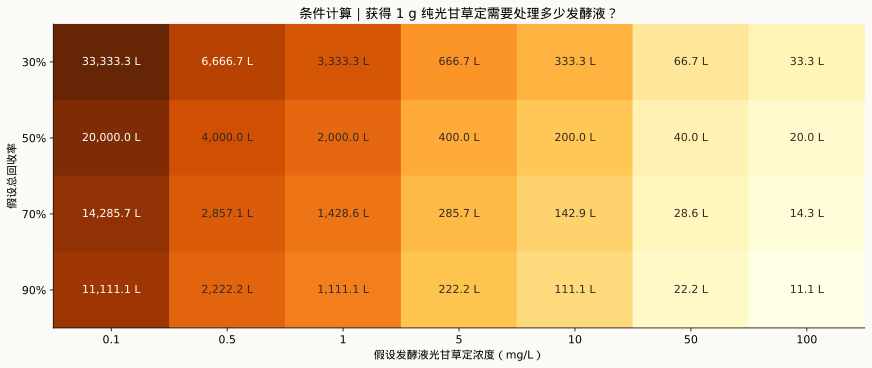
例如浓度为 1 mg/L、总回收率 70% 时，得到 1 g 纯光甘草定需处理约 1,429 L 发酵液；提高到 10 mg/L 且保持同一回收率时，约为 143 L。这说明提高浓度与回收率的价值，也说明“能生物合成”尚不等于“已实现资源优势”。不能将发酵液体积直接当作净用水量。
本次实际运行 OPERA 2.9.5 发布包，处理光甘草定、15 种护肤参照与 5 个路径中间体，共 21 种分子。事前选择 6 项理化／环境终点，未按输出好坏删选。原始输出包含近邻、全局适用域、局部域指数与准确度估计。
126 个目标输出中，123 个有数值、3 个缺失，缺失均为尿素的易降解、鱼体转化和土壤吸附任务。尿素单分子重算仍在降解描述符处报错；这些项目没有填成阴性。BioDeg 半衰期模型仅适用于烃类，本轮事前排除；KM 是鱼体转化，不能当作环境降解时间。
| 光甘草定终点 | 原生预测 | 单位 | 全局域 | 局部域指数 | 准确度指数 |
|---|---|---|---|---|---|
| 亲脂性 logP | 5.27 | log10 比值 | 模型全局域内 | 0.57 | 0.69 |
| 水溶解度 logS | -5.89 | log10(mol/L) | 模型全局域内 | 0.44 | 0.48 |
| 鱼体富集 logBCF | 1.70 | log10(L/kg) | 模型全局域内 | 0.37 | 0.65 |
| 易生物降解 | 预测非易降解（0） | 二分类 0/1 | 模型全局域内 | 0.47 | 0.74 |
| 鱼体生物转化半衰期 | -0.58 | log10(天) | 模型全局域内 | 0.30 | 0.48 |
| 土壤吸附 logKoc | 5.56 | log10(L/kg) | 模型全局域内 | 0.32 | 0.45 |
“全局域内”不等于高可信或安全。光甘草定局部指数只有约 0.30–0.57，近邻与目标的相似性仍有限；准确度指数也不是人体安全概率。模型原生预测范围保留在原始表中，不当作统一置信区间。
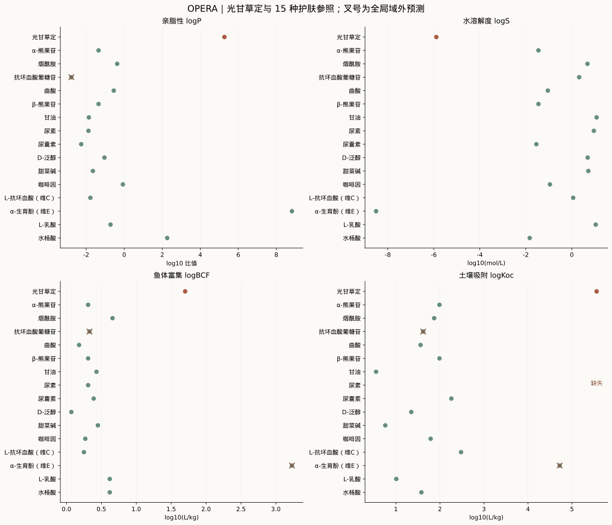
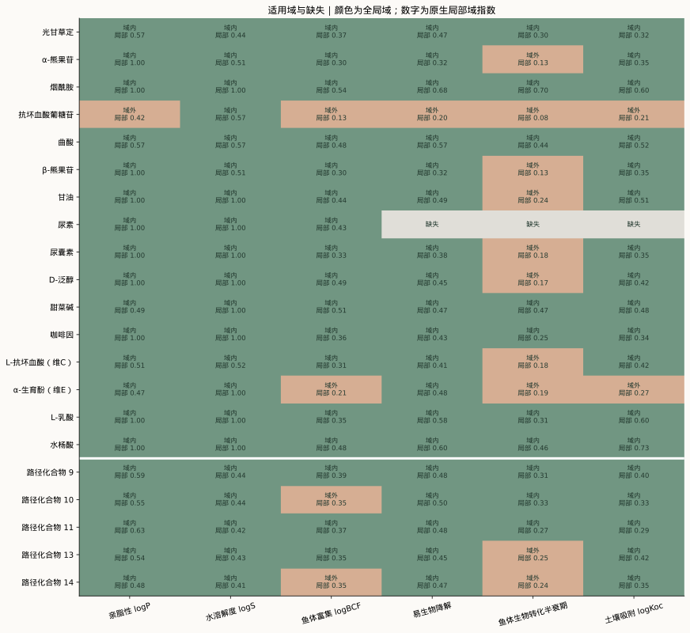
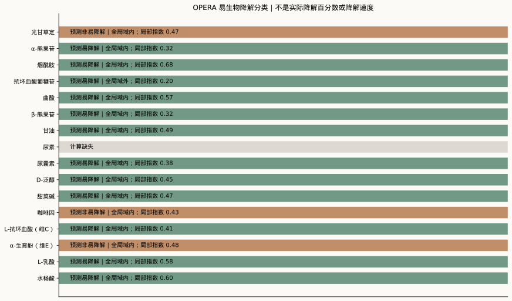
新增模型带来的结论：OPERA 对光甘草定给出 logBCF=1.70（换算约 50.1 L/kg），与既有 EPI Suite 约 1,542 L/kg 存在明显模型差异，不能择取较低值作为环境安全证明。预测非易降解则延续了原有需要关注降解与废物流的线索。此结果加强了回收与排放控制的研究必要性。
方法来源：OPERA 官方模型说明。LogP、WS 模型版本为 2.9，其余本轮四个环境模型版本为 2.6；以实际程序版本清单为准。
先取得可信的身份、定量、匹配组生产结果及纯化清单，再决定是否扩大验证。下表是下一阶段的工作清单，不是已完成的实验记录。
时间序列模板已补入化合物 13，避免只记录部分中间体而遗漏关键节点。正式采样时间和重复数应由先导数据、测定灵敏度与功效分析确定，不凭空生成拟合曲线或显著性。
一次技术交流让我们把问题从“怎样提高产量”，推进到“为什么这样设计、用什么结果证明、改善是否值得付出资源”。这里展示建议如何进入研究方案，以及下一步需要取得的证据。
材料为团队提供的一份教授访谈转写，围绕项目决策整理为八个主题。访谈日期未提供，未核对录音；摘录与本次设计回应分开展示。它反映这次交流，不代表公众共识或市场调查。
“通过微生物细胞工厂满足人类需求，让自然有更多空间，让植物享受自己的生活。”教授访谈转写 · 策略价值与应用前景
团队已确认以酿酒酵母为项目生产宿主。我们将这一愿景转化为具体问题：在获得相同质量和数量的光甘草定时，微生物生产能否减少植物来源原料需求，并控制培养、纯化和排放负担？答案需要匹配的工艺数据。
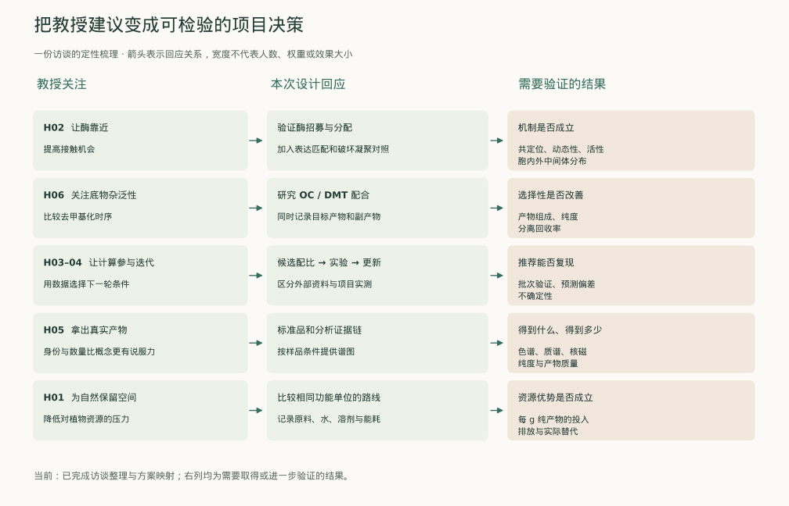
点击主题，查看转写原话、本次回应及需要的结果。“已纳入方案”表示文档和评价框架已更新，不表示菌株构建、实验验证或专家回访已经完成。
转写定位：策略价值与应用前景 · 老师
“通过微生物细胞工厂满足人类需求，让自然有更多空间，让植物享受自己的生活。”
转写定位：反应原理与策略 · 老师
“把它们放在液滴上，至少提高了分子相互接触的频率，使得它们能顺序通过。”
转写定位：干实验部分 · 老师
“有没有可能通过AI方法来优化酶的比例组合？”
转写定位：实验进度与干湿迭代 · 老师
“有实验数据，再通过干实验模型调整。”
转写定位：PPT顺序调整 · 老师
“拿出一小瓶产物，展示它的颜色、NMR比什么都有说服力。”
转写定位：具体改进策略 · 老师
“因为底物杂泛性，选择性不好，所以让它最后一个发生，解决杂泛性对纯度的影响。”
转写定位：策略价值与应用前景 · 老师
“除了这个产物，还能举一反三，找几个有意义的其他物质。”
转写定位：代谢通路改进 · 老师
“有没有可能不依赖PPT，自己手写出来？”
统计一份转写中明确归属教授、与研究和表达相关的 14 段发言。采用固定关键词表和公开主题规则，保留每次命中的原文位置。较高频词包括 酶（18 次）、实验（10 次）、催化（8 次）。
学生发言、混合说话人的开场段、人物照片建议，以及“反应原理与策略”中未明确标记说话人的两段文字未纳入。统计范围与前面的八项建议摘录不同。
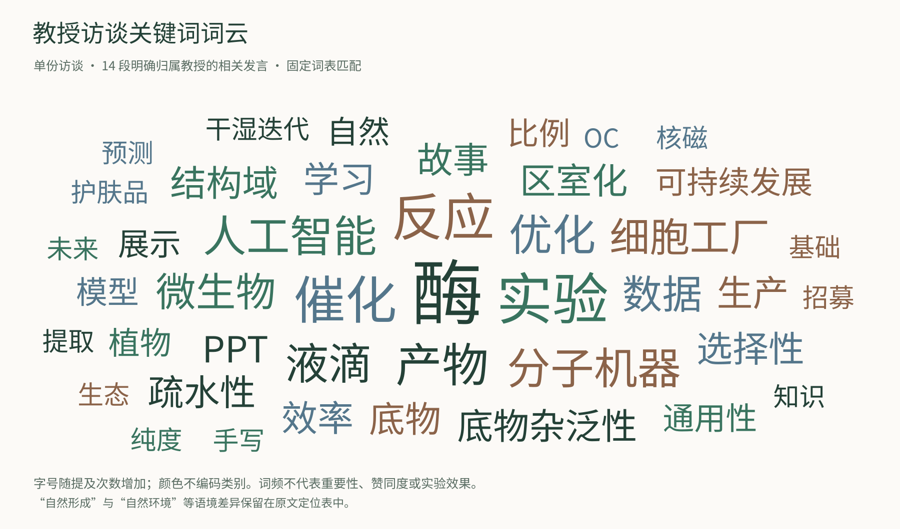
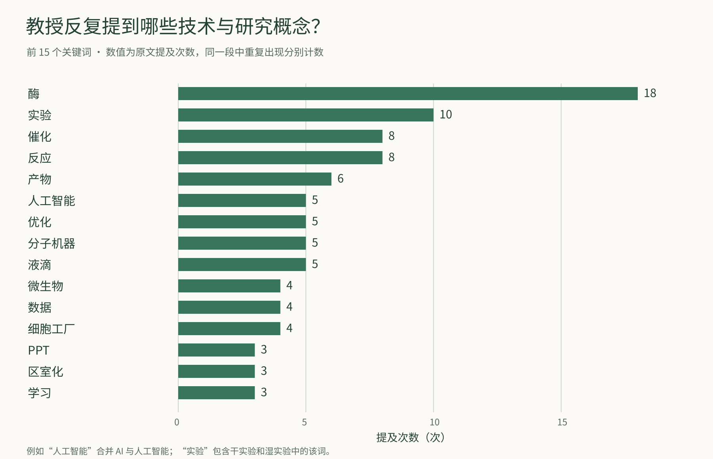
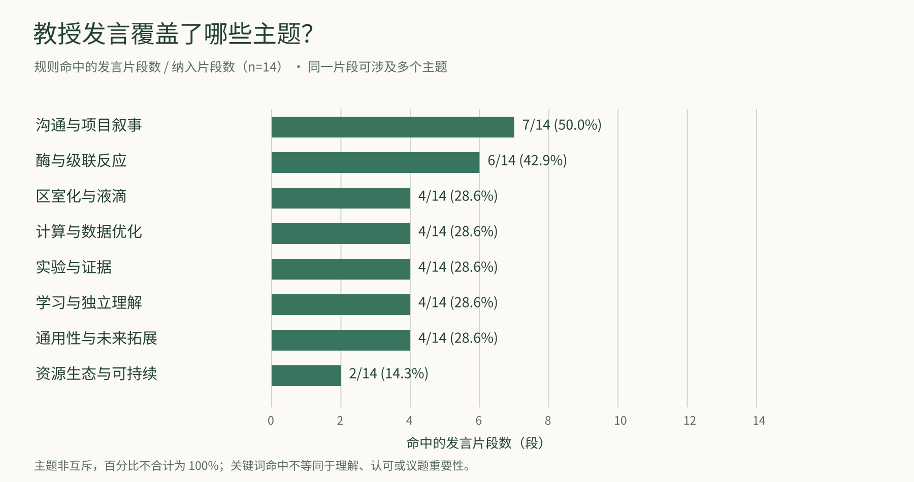
本轮为探索性固定词表匹配，不是情感分析或独立编码者验证。关键词共现、频次和规则命中都不能证明认同、因果关系或公众共识。
计算首先帮助选择值得测的条件；实验提供真实响应；下一批实验检验推荐能否成立。当前已有的毒性、环境和原子归因模型服务于性质筛查，不承担生产酶比例优化。
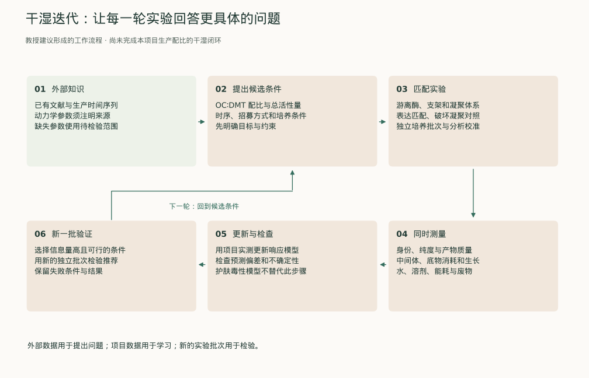
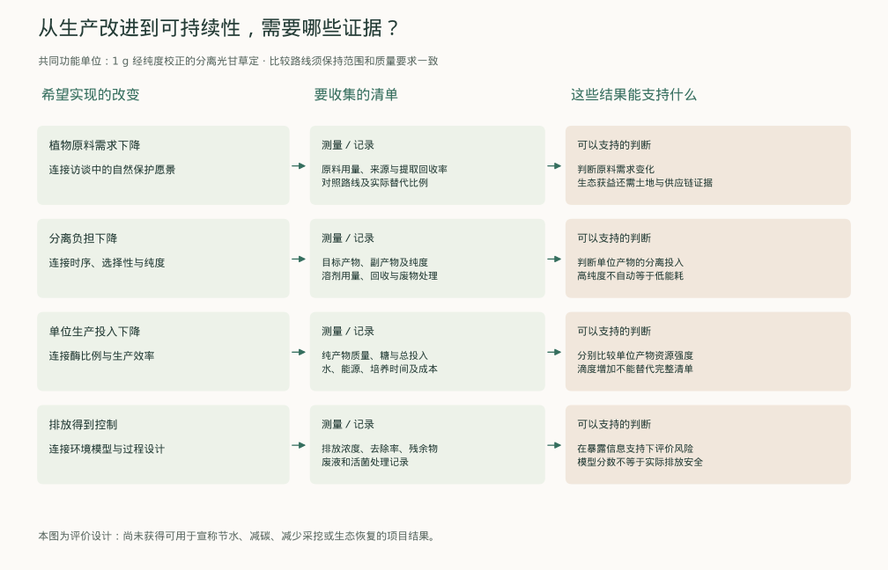
| 评价方向 | 建议记录 | 对应已有内容 |
|---|---|---|
| 植物原料压力 | 原料质量、来源、纯度、回收率及真实替代比例 | 提取纯度与处理规模 |
| 选择性与分离负担 | 目标产物、中间体、副产物、溶剂与回收 | 文献生产时间序列 |
| 单位产物资源强度 | 总投入、水、能源、时间和成本／g 纯产物 | 资源收支平衡条件图 |
| 排放和环境风险 | 排放浓度、处理去除率、受纳环境与残余物 | 环境性质与适用域 |
这些是团队对访谈愿景的评价转化。当前单位产物资源比较尚不是完整生命周期评价。碳排放还需要边界一致的清单与排放因子；生物多样性还需要土地利用及供应链证据。
可以把级联反应想象成多道相邻关卡：我们希望通过招募让相邻步骤的酶更容易遇到合适的反应物。但液滴会与周围环境交换分子，并非密封管道，底物也不一定按固定次序传递。需要结合分配、活性和中间体数据判断效果。
访谈称团队当时有 12 名成员。可以用手绘通路、独立解释模型假设、复核原始记录和贡献日志呈现学习过程；目前没有学习测评或个人贡献数据，因此不作排名或提升率统计。
待获得匹配组产物、纯度和资源记录后，带着“哪些建议已实施、哪些未奏效、还存在什么问题”回访教授。第二种天然产物、人工催化剂与多结构域分子机器留作后续探索，先通过独立实例验证适用范围。
让分子改善生活，让生产为自然保留空间。
项目愿景：以可验证的生产与环境结果逐步实现。选题价值：同研究酶试验比较支持光甘草定的活性优势；公开生产数据中的中间体积累支持进一步研究末端转化和回收。实际新增的 GNN 模型只带来很小的测试表现变化，OPERA 仍提示非易降解，不能概括为已经证实全面安全或环境友好。
技术可行性：已有外部文献支持酵母合成光甘草定，本项目可以据此建立分析与生产比较；相分离带来的改进仍待匹配实验验证。
护肤用途：已完成多模型筛查和固定参照比较。部分分数相对较低，但致敏、眼刺激及机理信号提示后续重点；目前不足以证明光甘草定比参照更安全或确定安全添加浓度。
可持续性：已明确单位纯产物的资源比较方法和收支平衡条件。只有实际生产增益超过对应资源增量，且排放得到验证，才能支持具体的效率或环境改善结论。
下一次更新：优先接入身份确认、匹配组生产重复和纯化／资源记录；有了这些数据，才能将条件图替换为带不确定性的实测比较图。
图表中的模型名称、化合物编号和计量单位保留标准写法。下载的原始模型字段保留平台标识，中文解释见本页及说明文件。原始文献数据库保留校验值，审计结果另存，未覆盖源文件。
复现入口：以下命令读取已保存预测、重算派生表格及中文图表，并检查页面链接。完整文献审计可通过独立脚本及原始文件复算，页面默认重建不要求下载 154 MB 的源数据库。
python analysis/run_all.py